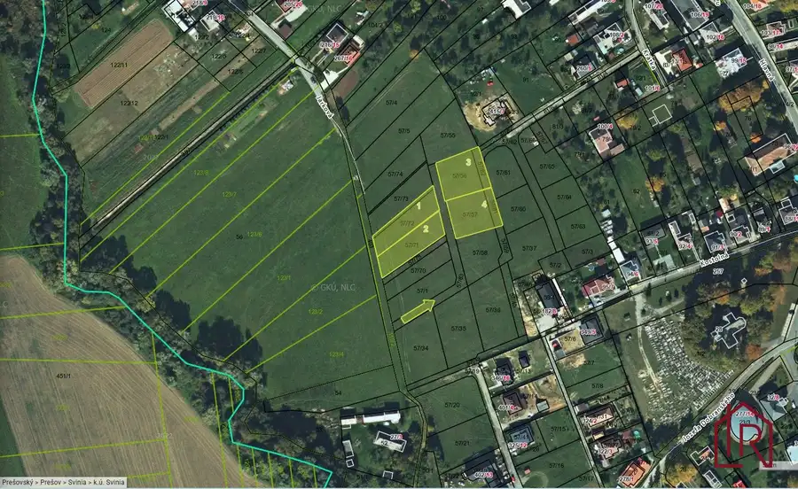
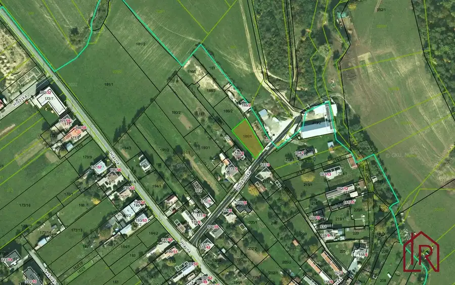
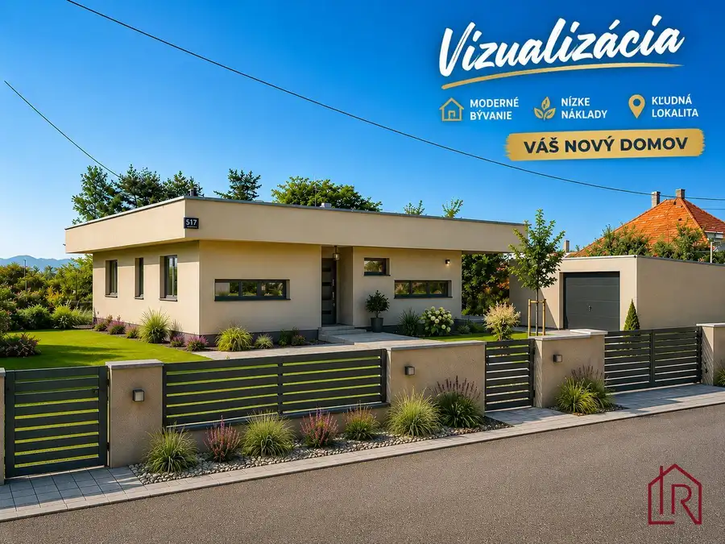

KH-948, Záhrada, pozemok, Prešov, Kendice
Kendice
- Plocha1850 m²
- Vlastníctvoosobné
O nehnuteľnosti
Impulz Real s.r.o. a Ing. Miroslav Bartko Vám ponúka na predaj udržiavaný pozemok v obci Kendice, situovaný na atraktívnej hranici intravilánu a extravilánu, čo poskytuje ideálnu kombináciu pokojného prostredia a dostupnosti občianskej vybavenosti. Pozemok sa nachádza v tichej lokalite v bezprostrednej blízkosti lesov a lúk, čo vytvára výborné podmienky na rekreáciu, alebo investičný zámer. Pozemok sa nachádza v tichej časti obce Chmelník a ponúka výmeru 1850 m². Terén je mierne svahovitý, čo umožňuje zaujímavé architektonické riešenia aj krásne výhľady.
Hlavné benefity pozemku
Strategická poloha – priamo na hranici intravilánu, s možnosťou budúcej výstavby podľa územného plánu obce.
Prírodné prostredie – okolie tvoria lesy, lúky a otvorené priestranstvá, ideálne na oddych, šport .
Vlastná studňa – veľká výhoda pre budúce využitie pozemku.
Udržiavaný a svahovitý terén – vhodný pre terasové riešenia, rekreačné objekty alebo ekologické stavby.
Blízkosť sietí – inžinierske siete sa nachádzajú v intraviláne v dosahu od pozemku.
Pokojná lokalita – súkromie a krásne výhľady.
Využitie pozemku:
Pozemok je vhodný pre: rekreačnú výstavbu, investičný zámer, ekologické či mobilné bývanie, záhradkárske a možno aj hospodárske účely, dlhodobé zhodnotenie v rastúcej obci pri Prešove.
Občianska vybavenosť:
v obci sa nachádza základná škola, materská škola, knižnica, pošta. Pre kultúrne aktivity slúži kultúrny dom a obec má aj futbalové ihrisko
Doprava :
obec je ľahko dostupná autom, pričom dobré je aj spojenie vlakové a autobusové s Prešovom aj Košicami, v obci je plánovaná výstavba medzinárodnej cyklomagistrály Euro Vel 11
Pre bližšie informácie sa s dôverou môžete kedykoľvek obrátiť na rodinného realitného makléra: Ing. Miroslav Bartko , (certifikovaný maklér NARKS - Národná asociácia realitných kancelárií Slovenska).
"VŠETKO POD JEDNOU STRECHOU", zabezpečenie právnych služieb advokátom, služby financovania, protokolárne odovzdanie nehnuteľnosti + elektrárne, plyn a 100% servis aj v budúcnosti so spoľahlivým tímom čestných a kvalifikovaných ľudí s dlhoročnými skúsenosťami. S nadhľadom profesionálnych skúseností, s maximálnym rešpektovaním Vašich potrieb, žijeme s vami Vaše realitné rozhodnutia akoby boli naše vlastné.
Spoločnosť Impulz Real - spoločnosť, ktorej DÔVERUJETE.
Parametre
| Rozloha pozemku | 1850 m² |
|---|---|
| Vlastníctvo | osobné |
| Voda | studňa |
| El. napätie | nie |
| Plyn | nie |
| Kanalizácia | nie |
| Inžinierske siete | blízko |
| Terén | svahovitý |
| Dátum zverejnenia | 4. 5. 2026 |
Kde to je
Mohlo by Vás zaujímať

Pozemok 172 980 €Investičné pozemky obec Svinia, 876m2, 876m2, 991m2, 977m2 Svinia 3720 m² na predaj 4 pozemky v obci Svinia, len pár minút od Prešova. Pozemky sú zahrnuté v územnom pláne obce na individuálnu bytovú výstavbu (IBV) – vhodné…
Pozemok2 50 000 €Stavebný pozemok obec Svinia – 751m2 Svinia 751 m² na predaj stavebný pozemok v obci Svinia, len pár minút od Prešova. Pozemok je zahrnutý v územnom pláne obce na individuálnu bytovú výstavbu (IBV).…
Rodinné domy10 365 900 €Moderný rodinný dom 141 m2, Kendice, kompletne zariadený Kendice 3-izbový118.94 m² IMPULZ REAL a Ing. Miroslav Bartko ponúkajú na predaj rodinný dom v Kendiciach. Luxusný, bezbariérový rodinný dom ponúka špičkové technológie a…